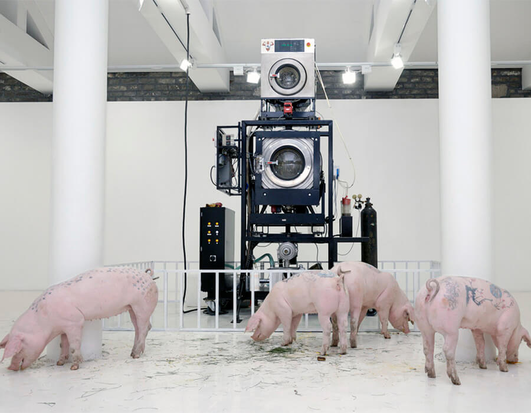
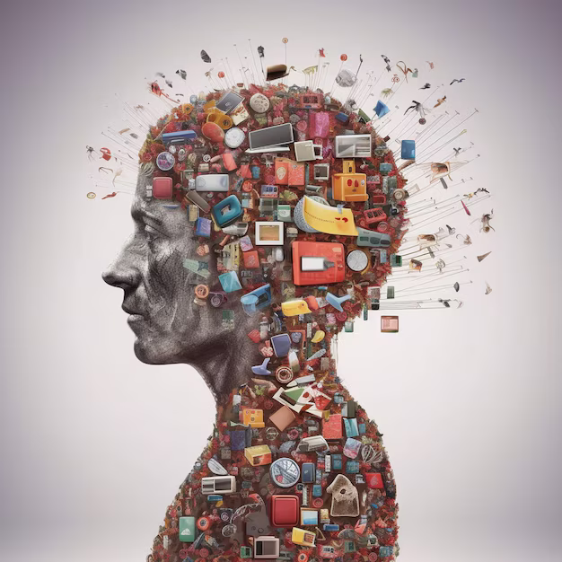
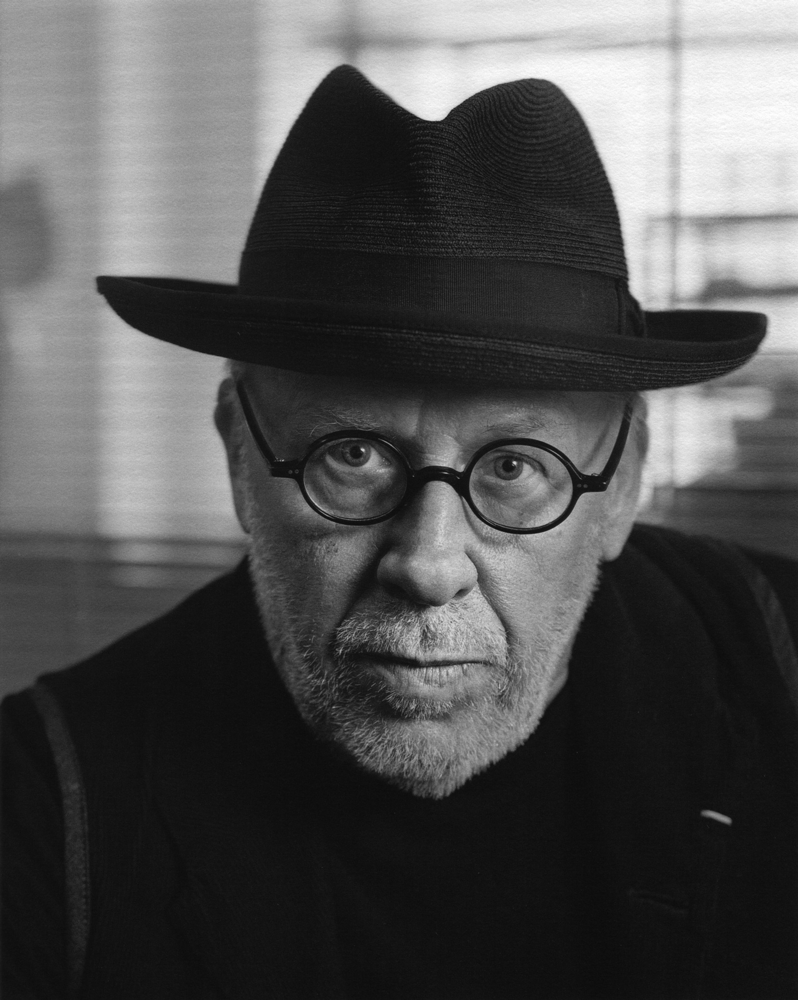
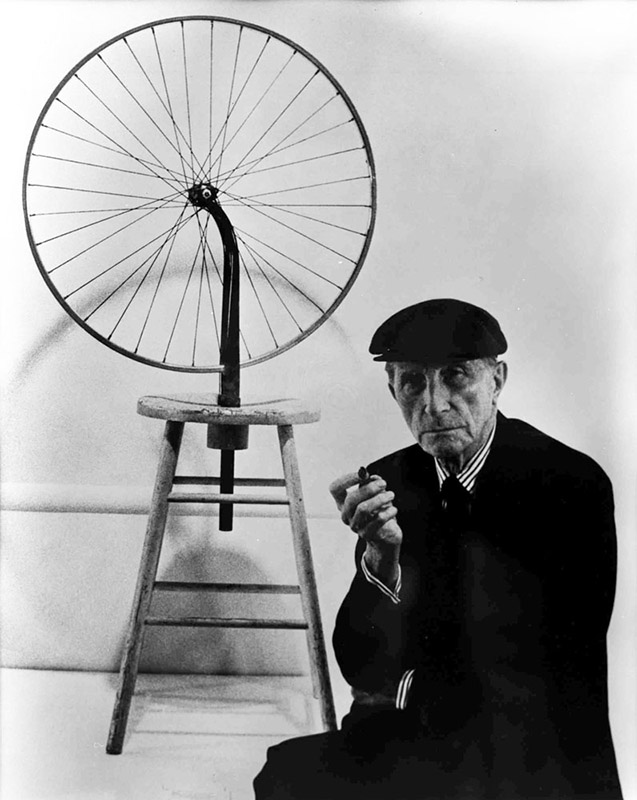
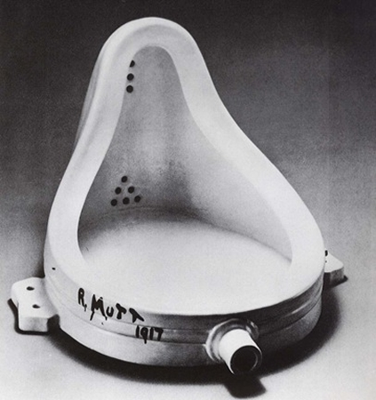
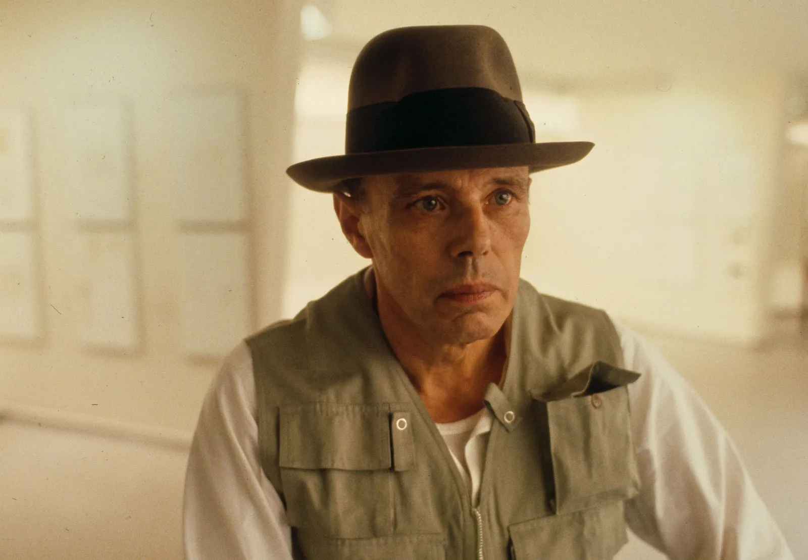
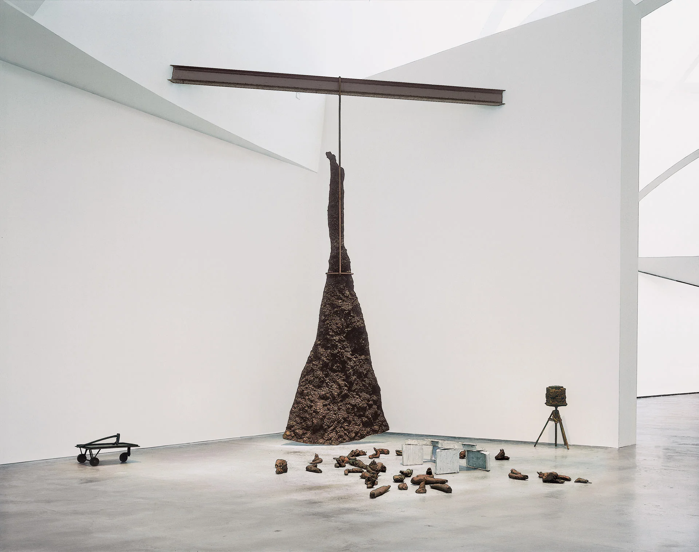
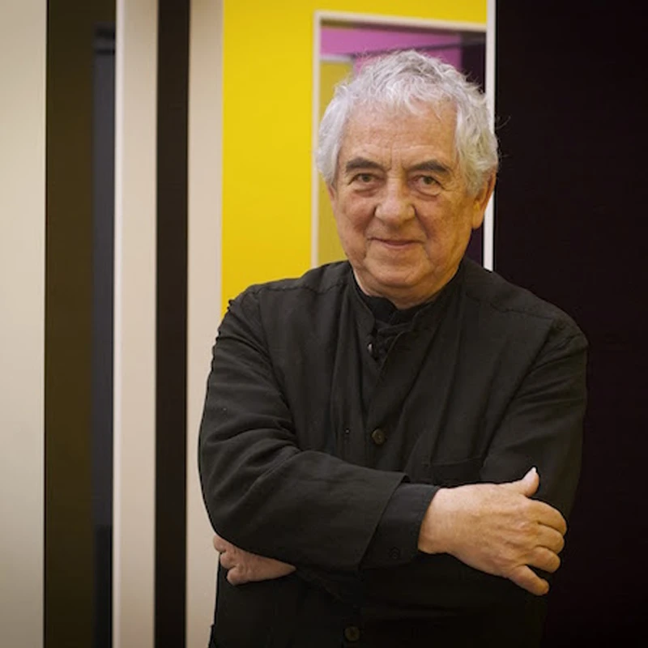
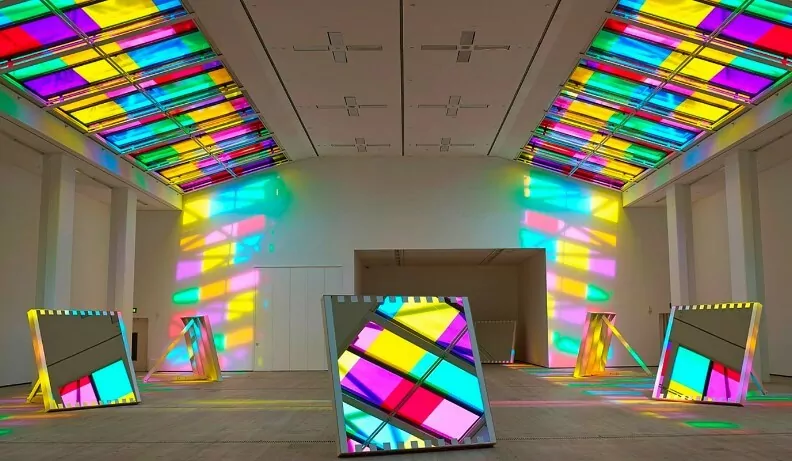

A arte conceptual valoriza mais a ideia por detrás da obra do que o produto acabado, sendo que, às vezes, este nem mesmo precisa existir. Suas expressões são bastante variadas e abrangem a fotografia, o vídeo, os textos, as performances, as instalações, a expressão musical entre outros elementos das linguagens artísticas. O termo arte conceitual foi usado pela primeira vez num texto de Henry Flynt, em 1961, relacionado com as atividades do Grupo Fluxus.
Não existem limites muito bem definidos para que uma obra seja considerada conceitual, pois entre suas intenções, a interpretação de ideias, conceitos, críticas ou denúncias são as mais presentes. O objetivo é que o observador reflita sobre o ambiente, assim como a violência, o consumo e a sociedade, que são preocupações básicas da arte contemporânea.
A obra do artista francês Marcel Duchamp, nas décadas de 1950 tinha prenunciado o movimento conceitualista, ao propor trabalhos que se tornariam protótipos de obras conceituais, como os readymades, por exemplo. O mesmo caráter precursor tem a obra 4'33", de 1952, do compositor estadunidense John Cage.
O movimento estendeu-se, aproximadamente, de 1967 a 1978. Foi muito influente, contudo, na obra de artistas subsequentes, como no caso de Mike Kelley ou Tracy Emin que são, por vezes, referidos como conceitualistas da segunda ou terceira geração, ou pós-conceptualistas. Ainda hoje o estilo, vez por outra, volta a emergir.
 
CARACTERÍSTICAS DA ARTE DE INSTALAÇÃO
Ênfase na Ideia ou Conceito: A principal característica da arte conceitual é a importância dada à ideia ou ao conceito subjacente à obra, mais do que à sua aparência estética ou técnica.
Uso de Diversos Meios: A arte conceitual pode se manifestar por meio de texto, fotografia, vídeo, instalação, performance, objetos do cotidiano ou uma combinação desses elementos, permitindo uma grande liberdade de expressão.
Questionamento das Normas Artísticas: Artistas conceituais desafiam as convenções tradicionais do que é considerado arte, questionando a necessidade de habilidade técnica ou beleza estética.
Interação com o Público:Muitas vezes, a interpretação do observador é fundamental para o entendimento completo da obra, e o público pode ser envolvido diretamente na criação ou finalização da obra.
Importância da Documentação: Obras de arte conceitual, especialmente as efêmeras, como performances e instalações temporárias, são frequentemente registradas por meio de fotos, vídeos ou descrições textuais para preservar a ideia original.
Exploração de Temas Filosóficos e Sociais: A arte conceitual aborda frequentemente questões filosóficas, políticas, sociais e culturais, utilizando a obra como um meio de provocar reflexão e debate sobre esses temas.
Arte conceitual e sua ampliação: A arte conceitual amplia o entendimento do que pode ser considerado um "objeto de arte", incluindo até mesmo ideias abstratas e conceitos que podem não ter uma forma física tangível.
PRINCIPAIS ARTISTAS DA ARTE DE CONCEITUAL
Joseph Kosuth: é um influente artista conceitual americano. Kosuth estudou belas artes na escola de artes visuais em New York. Seu trabalho é geralmente esforçado em explorar a natureza da arte, focalizando em idéias na marginalidade da arte em vez de produzir a arte por si mesmo.

Marcel Duchamp: foi um pintor, escultor e poeta francês, cidadão dos Estados Unidos a partir de 1955, e inventor dos ready made.
 
Joseph Beuys:Joseph Heinrich Beuys foi um artista alemão que produziu em vários meios e técnicas, incluindo pintura, escultura, fluxus, happening, performance, vídeo e instalação. Ele é considerado um dos mais influentes artistas alemães da segunda metade do século XX.
 
Daniel Buren:Ele ganhou inúmeros prêmios, incluindo o Leão de Ouro de melhor pavilhão na Bienal de Veneza (1986), o Prêmio Internacional de melhor artista em Stuttgart (1991) e o prestigioso Prêmio Imperial e de pintura em Tóquio em 2007. Ele criou várias pinturas mundialmente famosas instalações, incluindo "Les Deux Plateaux" (1985) no Cour d'honneur do Palais-Royal, e o Observatório da Luz na Fondation Louis Vuitton. É um dos artistas mais atuantes e reconhecidos no cenário internacional, e seu trabalho tem sido acolhido pelas mais importantes instituições e sites ao redor do mundo.
 
Nam June Paik:Nam June Paik foi um artista sul-coreano. Trabalhou em diversos meios de arte, sendo frequentemente creditado pela descoberta e criação do meio conhecido como videoarte.